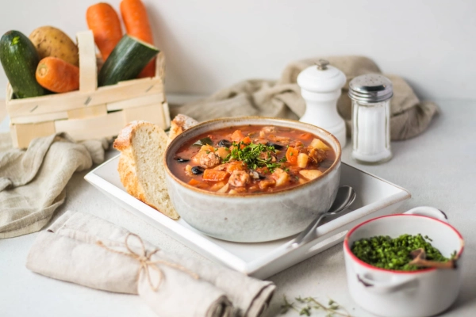

9 recettes de grand-mère : des plats réconfortants et authentiques

Les recettes de grand-mère évoquent la cuisine d’antan, faite d’ingrédients simples, de préparation lente et de plaisirs sincères. Qu’il s’agisse d’un plat mijoté à petit feu, d’un dessert à la vanille, ou d’une bonne soupe faite maison dans une casserole, ces recettes traditionnelles continuent de faire le bonheur de tout le monde, petits et grands gourmands.
Découvrez ici une sélection de plats emblématiques, d’astuces pratiques, et de recettes de grand-mère revisitées, pour redonner vie à ces trésors culinaires en format moderne… sans jamais trahir leur âme.
Les recettes de grand-mère sont des plats traditionnels français transmis de génération en génération, caractérisés par des ingrédients simples (légumes, viande, féculents), une cuisson lente et un goût authentique. Voici 9 recettes emblématiques classées en 3 catégories :
- ✓3 entrées : soupe à l'oignon gratinée, boulettes de viande sauce tomate, croquettes de pommes de terre
- ✓3 plats familiaux : hachis parmentier, poulet rôti aux légumes d'antan, gratin de pâtes à l'ancienne
- ✓3 desserts : tarte au sucre, riz au lait vanille-cannelle, beignets maison
Tableau récapitulatif des 9 recettes
| Recette | Catégorie | Temps | Difficulté | Personnes |
|---|---|---|---|---|
| Soupe à l'oignon gratinée | Entrée | 45 min | Facile | 4 |
| Boulettes de viande sauce tomate | Entrée | 40 min | Facile | 4 |
| Croquettes de pommes de terre | Entrée | 35 min | Facile | 4 |
| Hachis parmentier | Plat | 1h | Facile | 4 |
| Poulet rôti aux légumes d'antan | Plat | 1h15 | Facile | 4 |
| Gratin de pâtes à l'ancienne | Plat | 45 min | Facile | 4 |
| Tarte au sucre | Dessert | 30 min + pousse | Moyen | 6 |
| Riz au lait vanille-cannelle | Dessert | 45 min | Facile | 4 |
| Beignets maison | Dessert | 30 min + pousse | Moyen | 6 |
Les ingrédients incontournables de la cuisine de grand-mère
Ces 9 recettes traditionnelles partagent une base d'ingrédients simples et accessibles, qu'on retrouve dans presque toutes les cuisines françaises :
- •Pommes de terre, oignons, ail
- •Beurre, farine, œufs, lait
- •Viande hachée, poulet
- •Tomates pelées, herbes aromatiques
- •Fromage râpé, chapelure
- •Sucre, vanille, cannelle
- •Légumes anciens (panais, navet, topinambour)
- •Huile d'olive, sel, poivre
Les entrées de grand-mère : simples, savoureuses, pleines de goûts
Soupe à l’oignon gratinée au four
La soupe à l’oignon est un grand classique. Mijotée dans une casserole à feu doux, elle révèle toute sa richesse avec un peu de farine, une touche de beurre, et quelques tomates pelées pour adoucir le bouillon.
Gratinée au four, et servie avec des croûtons dorés à la chapelure, elle constitue une entrée gourmande, chaleureuse et économique.
N’oubliez pas le filet d’huile d’olive à la fin pour sublimer l’assaisonnement.
Cette soupe à l’oignon gratinée, servie avec des tartines de courgette aux radis croquants et à la ciboulette fraîche, mêle douceur et caractère dans une recette de grand-mère pleine de goûts authentiques.
Boulettes de viande maison et sauce tomate
Les boulettes de viande sont une recette traditionnelle parfaite pour les enfants. On les prépare avec du bœuf haché, un mélange d’herbes, de farine, un œuf, un peu d’ail, et une pincée de cannelle pour parfumer.
Elles sont ensuite plongées dans une sauce tomate maison à base de tomates pelées, d’oignon émincé, et de vanille pour adoucir l’acidité.
À cuire doucement pendant 20 à 30 minutes à feu moyen.
Inspirées des recettes traditionnelles, ces boulettes de bœuf à la grecque sont mijotées dans une savoureuse sauce tomate aux aubergines fondantes, pour un plat généreux qui plaît à tout le monde.
Croquettes de pommes de terre à la chapelure
Une entrée croustillante à base de purée maison, enrichie de petits morceaux de beurre, d’œufs, de fromage, de sel et poivre. Formez une pâte ferme, façonnez les croquettes, roulez-les dans la chapelure et enfournez.
À servir avec une salade ou une petite soupe pour un repas léger et convivial.
Ces croquettes de pommes de terre au fromage croustillent sous la dent grâce à leur chapelure dorée, et se marient parfaitement avec une sauce au jalapeños relevée et une salade de concombre pleine de fraîcheur.
Les plats familiaux : recettes traditionnelles pour toute occasion
Hachis parmentier au bœuf haché et patate douce
Un plat emblématique des recettes de grand-mère, alliant simplicité et plaisirs authentiques.
Préparez une purée avec des pommes de terre et de la patate douce. Ajoutez du lait, du sel et des petits morceaux de beurre.
Le fond est composé de bœuf haché, d’oignon, de cannelle et d’assaisonnement doux. Terminez par une cuillère à soupe de chapelure pour obtenir une belle croûte dorée au four.
Ce hachis parmentier mêle bœuf haché, patate douce et purée de pommes de terre dans un mélange réconfortant, le tout gratiné au four pour une belle croûte dorée comme dans les recettes de grand-mère.
Poulet rôti aux légumes d’antan
Un poulet fermier rôti à point au four, accompagné de carottes, de pommes de terre, et d’un filet d’huile.
On l’arrose régulièrement avec un jus d’ail, d’oignon et de bouillon chaud pour garder la viande moelleuse. Ajoutez quelques herbes et une touche de vanille ou de cannelle pour twister cette recette traditionnelle.
Un plat idéal pour une grande occasion familiale.
Une recette traditionnelle pleine de goûts : la cuisse de poulet est rôtie au four avec des légumes d’hiver fondants et nappée d’une sauce au vin blanc, accompagnée d’épinards pour l’équilibre.
Gratin de pâtes à l’ancienne
Un gratin généreux à base de pâte torsadée, de sauce tomate, de bœuf haché et de fromage râpé.
On incorpore un mélange de tomates pelées, d’oignon, d’ail et d’herbes dans la préparation, puis on fait cuire au four pendant 30 minutes.
Terminez avec une cuillère à soupe de chapelure et de beurre pour une croûte croustillante et dorée. N’hésitez pas à utiliser de la pâte fraîche.
Ce gratin de macaroni aux deux fromages, généreux et fondant, associé à du jambon de Paris et une salade croquante, réinvente la pâte en version conviviale, idéale pour une occasion familiale.
Les desserts d’antan : douceurs sucrées au bon goût de souvenirs
Tarte au sucre à l’ancienne
Cette tarte au sucre se prépare avec une pâte brisée maison à base de farine, œufs, petits morceaux de beurre et une pointe de sel.
On y ajoute un mélange de sucre, de vanille et de crème, puis on fait cuire à feu doux au four pendant 35 minutes, jusqu’à ce que la croûte soit dorée.
Un pur moment de plaisirs sucrés à partager.
Riz au lait à la vanille et cannelle
Un dessert réconfortant et facile à préparer dans une casserole. Il faut du riz rond, du lait entier, de la vanille, une pincée de cannelle, et du sucre.
Faites cuire lentement à feu doux en remuant pendant environ 40 minutes, jusqu’à obtenir une texture fondante.
Les enfants adorent ce dessert tout doux et les grands y retrouvent le goût de l’enfance.
Beignets maison à la pâte légère
Une recette de grand-mère incontournable. La pâte se compose de farine, de sucre, d’œufs, d’un peu de lait et de levure.
Laissez reposer puis formez de petits beignets. Faites-les cuire dans une casserole d’huile chaude.
Roulez-les encore tièdes dans un mélange de sucre et de cannelle. À savourer au goûter, entre amis ou en famille.
Questions fréquentes sur les recettes de grand-mère
Qu'est-ce qu'une recette de grand-mère ?
Une recette de grand-mère est un plat traditionnel français transmis de génération en génération, caractérisé par des ingrédients simples du quotidien (légumes, viande, féculents), une préparation lente à feu doux et un goût authentique. Ces recettes privilégient le fait-maison et les techniques de cuisson traditionnelles comme le mijotage, le gratinage ou la cuisson au four.
Quels sont les plats traditionnels français les plus emblématiques ?
Les plats traditionnels français les plus emblématiques sont la soupe à l'oignon gratinée, le hachis parmentier, le poulet rôti aux légumes, le gratin de pâtes, les boulettes de viande à la sauce tomate, la tarte au sucre, le riz au lait à la vanille et les beignets maison. Ces plats utilisent des ingrédients simples et accessibles.
Comment réussir un hachis parmentier maison ?
Pour réussir un hachis parmentier maison : faites revenir le bœuf haché avec oignons et ail, préparez une purée onctueuse de pommes de terre (ou patate douce) au beurre, montez le plat en couches dans un plat à gratin, saupoudrez de fromage râpé, et enfournez 25 minutes à 200°C jusqu'à obtenir un dessus doré et croustillant.
Quels ingrédients de base pour la cuisine traditionnelle ?
Les ingrédients de base de la cuisine traditionnelle française sont : pommes de terre, oignons, ail, beurre, farine, œufs, lait, viande hachée, tomates pelées, herbes aromatiques (thym, laurier), épices douces (vanille, cannelle), fromage râpé et chapelure. Ces ingrédients permettent de préparer la majorité des recettes de grand-mère.
Combien de temps faut-il pour cuisiner un plat de grand-mère ?
Les plats de grand-mère demandent généralement entre 30 minutes et 2 heures de cuisson. Les entrées comme la soupe à l'oignon prennent 45 minutes, les plats mijotés comme le hachis parmentier ou le poulet rôti demandent 1h à 1h30, et les desserts comme le riz au lait nécessitent 30 à 45 minutes. La cuisson lente est la clé du goût authentique.
Comment recevoir les ingrédients pour cuisiner ces recettes ?
Quitoque livre les ingrédients pré-dosés et frais pour cuisiner ces recettes traditionnelles à domicile. La box Quitoque inclut les recettes détaillées, les ingrédients en quantité juste (anti-gaspi) provenant de 150 producteurs locaux français, et des fiches étape par étape pour réussir vos plats sans difficulté.